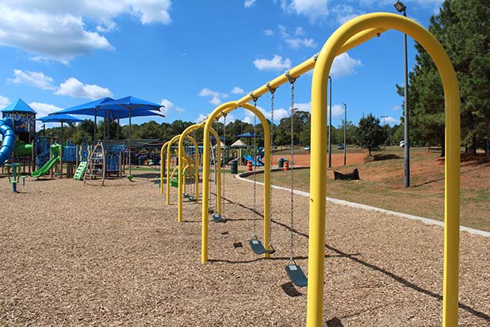

This map involved the analysis of the proximity of restaurants to parks in Forsyth County, Georgia. Forsyth County is my home town which has seen a lot of growth over the last decade, yet is still fairly spread out. It was eye opening to see that there are almost no restaurants within walking distance of any park. Even for the map I provided here, I would not recommend walking to those restaurants as the Keith Bridge Road is very busy and is a major access point to Highway 400 (connection to Atlanta). It will be interesting to see if with the recent urban development if a biking/walking community will become more popular.
Link to Forsyth County Restaurant GeoJSON
Click HERE for Central Park Facilities Map
Photographs and facilities map pulled from County Parks and Recreation website.
Map prepared by Jessica Freeman for Digital Mapping MAP671, August 2018
Software used: QGIS 2.18.21 on Windows 10
Coordinate reference system: NAD83(NSRS2007)/Georgia East (ftUS) (EPSG: 3519).
All data provided by OpenStreetMap (OMS) (https://www.openstreetmap.org).
Photo of Central Park Entrance
Photo of Playground at Central Park
University of Kentucky New Maps Plus, Spring 2018.